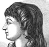
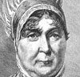

Collective Biographies of WomenAn Annotated Bibliography
Alison Booth
9.
Adams, William Henry Davenport. Exemplary Women: A Record of Feminine Virtues and Achievements. London: 1882.
Search OCLC WorldCat for this title.
Search Google Books for this title.
Adams, William Henry Davenport. Exemplary Women: A Record of Feminine Virtues and Achievements. London: 1882.
Bodleian Abridged from Woman's Work and Worth.
TOC: Woman as Mother; Woman as Wife; Woman as Maiden; Woman in the World of Letters; Woman in the World of Art; Woman as the Heroine; Woman as Enthusiast and Social Reformer.
-
Florence Nightingale
-
Monnica, St. Augustine’s Mother
-
Madame Roland
-
 Mrs. Thrale Piozzi
Mrs. Thrale Piozzi -
Lady Jane Grey
-
Angelina Kaufman
-
Joan of Arc
-
Elizabeth Fry
Search OCLC WorldCat for this title.
Search Google Books for this title.